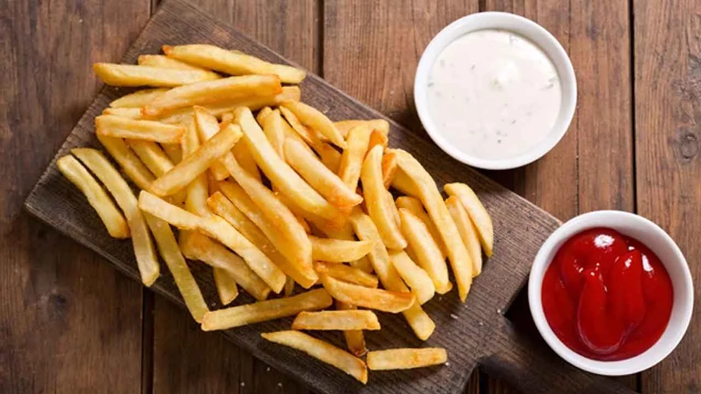

Papas a la Francesa

Descripción
Las papas a la francesa, también conocidas como papas fritas o patatas fritas, son un popular acompañamiento
culinario que consiste en rodajas finas o tiras de papa que se fríen en aceite caliente hasta que adquieren
una textura crujiente y dorada por fuera, mientras que por dentro quedan tiernas
Ingredientes
- 2 papas medianas (aproximadamente 300-400 gramos en total)
- Aceite vegetal (como aceite de maíz, canola o cacahuate) para freír
- Sal al gusto
Pasos
- Comienza lavando bien las papas bajo agua corriente para quitar cualquier suciedad
- Corta las papas en tiras delgadas y uniformes
- Remojar las tiras de papa en agua fría durante unos 30 minutos
- Después de remojarlas secarlas
- En una sartén grande o una freidora, calienta suficiente aceite a una temperatura de alrededor de 175-180°C.
- Con cuidado, coloca las tiras de papa en el aceite caliente. Cocina las papas hasta que estén doradas y crujientes, lo que suele tomar alrededor de 3-5 minutos por lote.
- Mientras las papas aún estén calientes, sazónalas con sal al gusto
- Sirve las papas a la francesa inmediatamente mientras estén calientes y crujientes. Puedes acompañarlas con ketchup, mayonesa u otras salsas de tu elección.